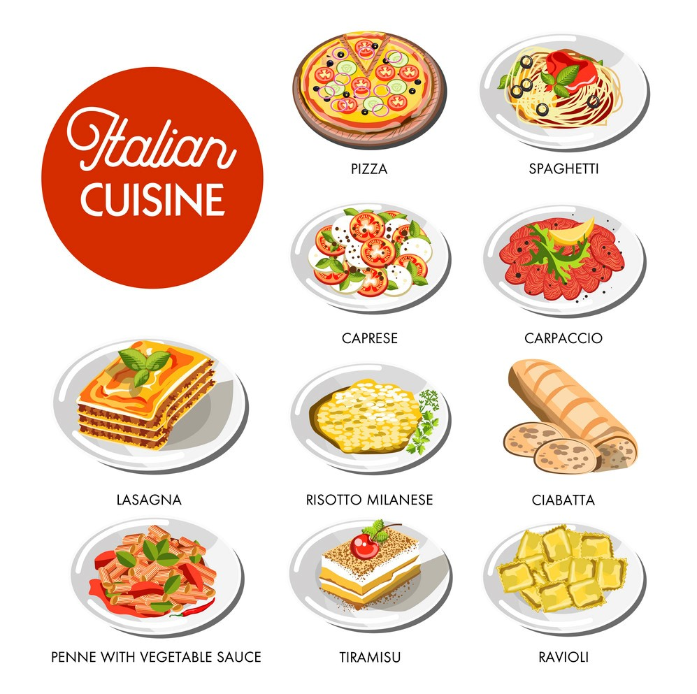
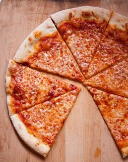
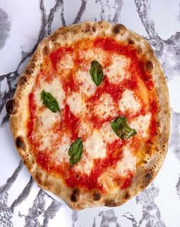
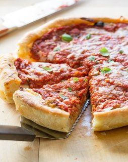

Kuchnia włoska jest jedną z najbardziej znanych i lubianych kuchni świata.
Głównymi składnikami włoskich dań są: oliwa z oliwek, mąka, pomidory, bazylia i wino. Z kuchni włoskiej wywodzą się takie dania jak pizza, spaghetti, lasagna, czy pesto.

Poprzez wielką emigrację Włochów pod koniec XIXw., włoska kuchnia rozprzestrzeniła się na cały świat.
Powstały przez to nowe odmiany tradycyjnych włoskich dań. Dobrym przykładem tego zjawiska jest pizza, która w USA ma kilka odmian, przyporządkowanych do regionu. Aby dowiedzieć się więcej, najedź myszką na zdjęcie.

Pizza w stylu nowojorskim
Cechuje się bardzo cieńkim ciastem i dużymi kawałkami, aby można ją było kupić na kawałki.

Pizza neapolitańska
Standardowa pizza włoska, składająca się z ciasta, sosu z świeżych pomidorów i świeżej mozarelli.

Pizza w stylu chicagowskim
Pizza ta charakteryzuje się bardzo grubym ciastem i dużą ilością składników. Dużo osób śmieje się z niej mówiąc że nie powinna zaliczać się do pizzy tylko ciasta.